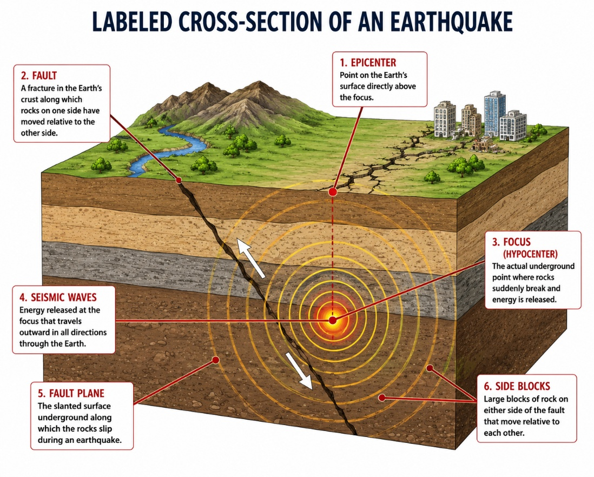
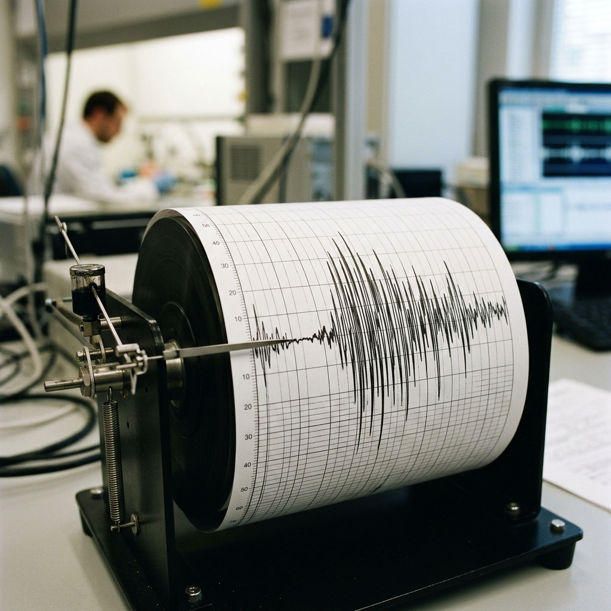

The ground under our feet feels very solid. However, the outer layer of the Earth is actually broken into huge pieces. This outer layer is called the crust. The huge pieces are called tectonic plates. They are like giant puzzle pieces that make up the Earth's shell. Tectonic plates float very slowly on hot, melted rock deep inside the Earth. They move only a few centimetres every year.
As these plates float, they move in three main ways. First, some plates pull away from each other. Second, some plates bump into each other. This bumping can push the land up to make big mountains. Third, some plates slide sideways past each other. The places where the plates meet are called boundary zones.

Tectonic plates have rough and jagged edges. As the plates try to move, their rough edges can get stuck. They stick because of friction. Friction is a force that stops things from sliding easily. Even though the edges are stuck, the rest of the plates keep moving. This creates tension. Tension is growing pressure stored in the stuck rocks.
"Even though the edges are stuck, the rest of the plates keep moving... This creates tension."
— Tectonic Mechanics
Over time, this pressure becomes too big. The rocks suddenly break or slip. This slip usually happens along a fault. A fault is a crack in the Earth's crust where rocks can move. When the rocks slip, they quickly release a lot of stored energy.

This energy travels out in all directions. It moves as seismic waves. Seismic waves are powerful ripples of energy that travel through the ground. These waves make the ground shake. We feel this shaking as an earthquake. The point deep underground where the rocks first broke is called the focus. The point on the surface directly above the focus is called the epicentre. The shaking is always strongest near the epicentre. Smaller shakes called aftershocks can happen for days or weeks after the main earthquake.

Scientists measure earthquakes with a seismograph. A seismograph is a special machine that measures ground movements. By studying earthquakes, scientists learn how to build safer houses to protect people.
